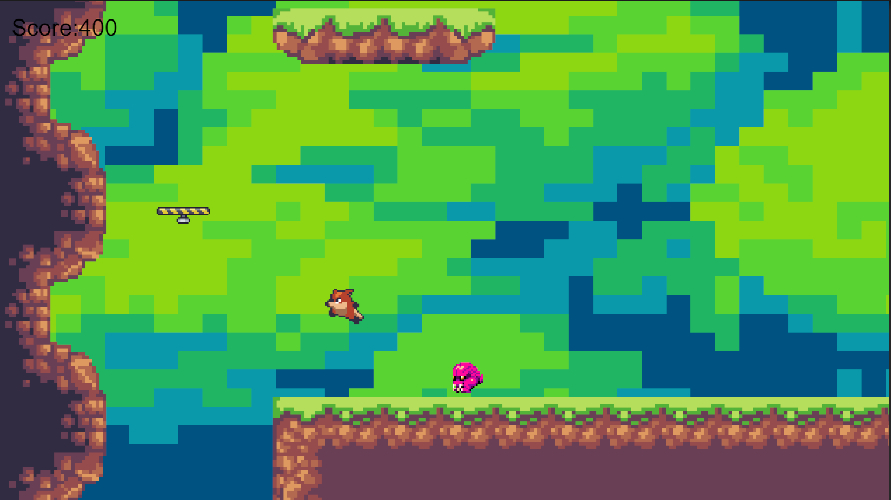
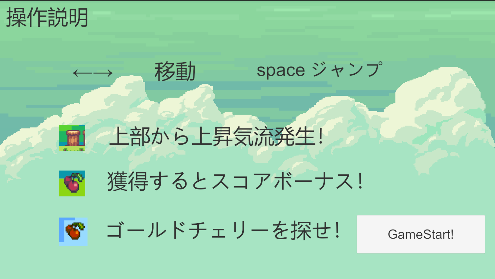

2Dアクション
ゲームシステム

- ゲーム
- さくらんぼを集めながらステージ上部にあるゴールを目指す
- 敵モンスターの討伐とさくらんぼを獲得するとポイントを獲得できる
- ゴールまでのルートを2つ用意し、合流地点からぼ逆走も可能(ゴール地点は1つ)

- ランキング
- ゴールするとランキングに登録される
- 獲得したポイントからの最終スコアにてランキングが設定
こだわりポイント
上昇気流の上昇範囲、量の設定はかなりの微調整をしました
横移動の床は判定にかなり苦労しました